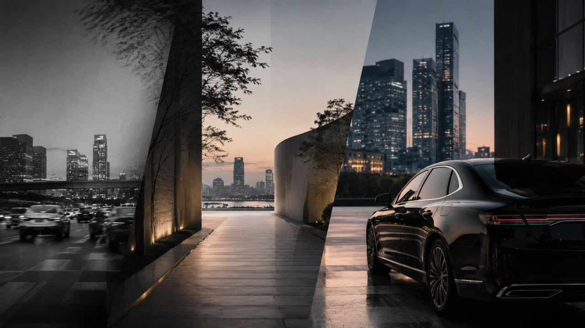
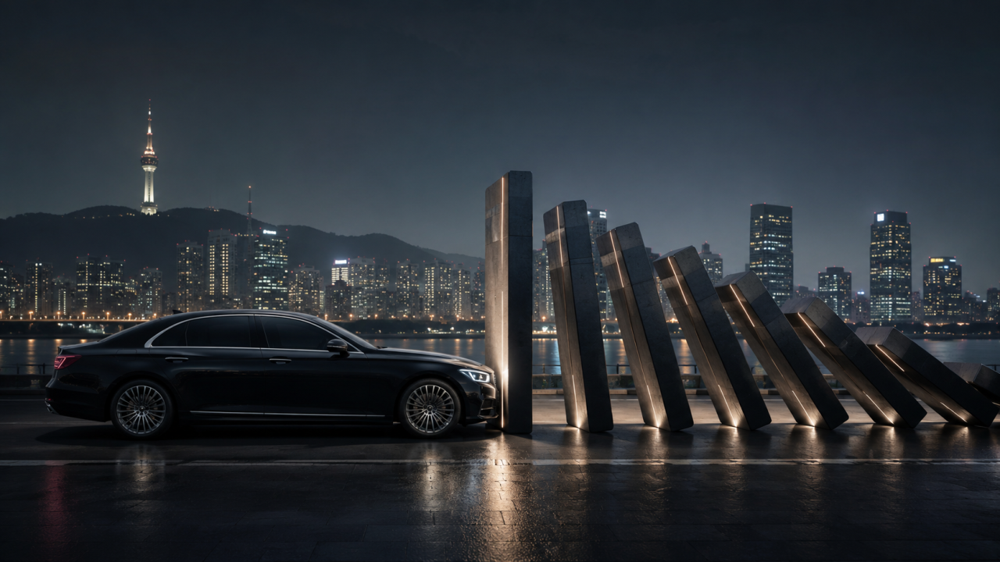

블로그
한국의 프리미엄 모빌리티·MICE 물류·인바운드 여행 인사이트.

Wizmobility가 실제로 하는 일
한국의 지상 이동 서비스를 조달할 때 많은 담당자들이 처음부터 잘못된 공급자에서 출발합니다. 택시, 렌터카, 콜밴은 각자 다른 문제를 해결하도록 설계되었으며, 인바운드 브랜드 운영이나 글로벌 MICE 기획자가 실제로 직면하는 문제는 고전적인 공급자들이 다루지 않습니다. Wizmobility가 무엇을 하는지 이해하려면, Wizmobility가 의도적으로 하지 않는 것이 무엇인지부터 살펴야 합니다.

한국 인바운드 행사 전, 지상 교통 파트너에게 전달해야 할 운영 요청 가이드
한국 인바운드 프로그램에서 발생하는 대부분의 문제는 현장 실행 능력이 부족해서가 아닙니다. 운영 요청서가 불완전하거나 너무 늦게 전달된 것이 원인인 경우가 훨씬 많습니다. 이 가이드는 MICE 기획자, DMC 운영사, 기업 출장 담당자를 위한 체계적인 정보 전달 프레임워크를 제공합니다. 어떤 정보를, 언제 공유해야 하는지를 다룹니다. 지상 교통 운영의 품질은 차량이 출발하기 전, 파트너에게 무엇을 전달했느냐에 달려 있습니다.

서울·부산·제주를 아우르는 다도시 MICE 프로그램의 지상 이동 운영 계획
여러 도시를 순회하는 한국 MICE 프로그램을 기획할 때, 지상 이동 문제는 차량 종류에서 시작하지 않습니다. 교통 흐름과 행사장 위치가 저마다 다른 세 도시를, 하나의 통합된 운영 체계 안에서 어떻게 연결할 것인가에서 출발합니다. 이 가이드는 서울·부산·제주 각 도시의 운영 과제, 도시 간 이동을 연결하는 변수들, 그리고 프로그램 전체를 안정적으로 이끄는 조율 방법을 다룹니다.

왜 차량 운영이 방한 일정 전체를 결정하는가
고위 임원이 촉박한 일정으로 한국을 방문할 때, 공항에서 기다리는 차량은 단순한 교통수단이 아닙니다. 방문이 얼마나 준비됐는지를 보여 주는 첫 번째 신호입니다. 이동 한 번 한 번이 하루 일정의 신뢰를 지키거나, 다음 일정까지 이어지는 리스크를 만듭니다. 이것이 차량 운영이 방한의 성패를 결정하는 이유입니다.

좋은 차량이 곧 좋은 서비스는 아닙니다: 한국 프리미엄 모빌리티의 실제 기준
대부분의 글로벌 브랜드와 MICE 기획자는 한국 모빌리티 파트너를 평가할 때 차량 모델과 영어 구사 능력을 기준으로 삼습니다. 두 가지 모두 중요하지만, 어느 쪽도 운영의 성패를 결정하지는 않습니다. 좋은 차량과 좋은 서비스 사이의 간극, 그리고 그 간극을 만드는 운영 설계의 차이를 살펴봅니다.

의전 운송의 본질은 예약이 아니라 설계입니다
많은 기업이 의전 운송을 '좋은 차량과 능숙한 기사를 확보하는 일'로 이해한다. 그러나 한국 인바운드 럭셔리 행사 현장에서 실제로 차이를 만드는 것은 예약의 질이 아니라 운영 설계의 깊이다. 동선 사전 답사, 언어 매칭, 실시간 배차 조율—이 모든 것은 차량이 출발하기 전에 완성되어 있어야 한다.
아직 등록된 글이 없습니다. 곧 새 글로 찾아뵙겠습니다.
좋은 차량이 곧 좋은 서비스는 아닙니다: 한국 프리미엄 모빌리티의 실제 기준
대부분의 글로벌 브랜드와 MICE 기획자는 한국 모빌리티 파트너를 평가할 때 차량 모델과 영어 구사 능력을 기준으로 삼습니다. 두 가지 모두 중요하지만, 어느 쪽도 운영의 성패를 결정하지는 않습니다. 좋은 차량과 좋은 서비스 사이의 간극, 그리고 그 간극을 만드는 운영 설계의 차이를 살펴봅니다.
Wizmobility가 실제로 하는 일
한국의 지상 이동 서비스를 조달할 때 많은 담당자들이 처음부터 잘못된 공급자에서 출발합니다. 택시, 렌터카, 콜밴은 각자 다른 문제를 해결하도록 설계되었으며, 인바운드 브랜드 운영이나 글로벌 MICE 기획자가 실제로 직면하는 문제는 고전적인 공급자들이 다루지 않습니다. Wizmobility가 무엇을 하는지 이해하려면, Wizmobility가 의도적으로 하지 않는 것이 무엇인지부터 살펴야 합니다.
의전 운송의 본질은 예약이 아니라 설계입니다
많은 기업이 의전 운송을 '좋은 차량과 능숙한 기사를 확보하는 일'로 이해한다. 그러나 한국 인바운드 럭셔리 행사 현장에서 실제로 차이를 만드는 것은 예약의 질이 아니라 운영 설계의 깊이다. 동선 사전 답사, 언어 매칭, 실시간 배차 조율—이 모든 것은 차량이 출발하기 전에 완성되어 있어야 한다.